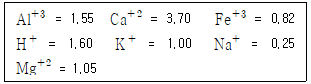
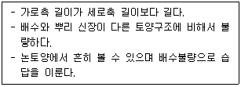
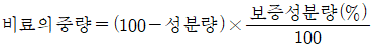
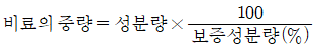
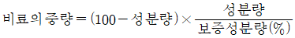
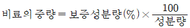

농림토양평가관리산업기사 (2008-05-11 기출문제)
1과목: 토양학
1. 다음 중 토양의 풍식을 방지하기 위한 방법으로 적절하지 못한 것은?
- 방풍림 설치
- 입단(粒團)화 조장
- 표면피복
- 침엽수 벌목
(정답률: 알수없음)

2. 다음 중 토양입자에 가장 강하게 부착되어 있는 토양수는?
- 흡습수
- 결정수
- 모세관수
- 중력수
(정답률: 알수없음)
3. 입자밀도(particle density)가 2g/cm3 이고 용적밀도(bulk density)가 1g/cm3 일 때 공극률은 몇 % 인가?
- 30
- 40
- 50
- 60
(정답률: 알수없음)
4. 다음 중 토양단면에서 집적층에 해당하는 층은?
- A층
- B층
- C층
- R층
(정답률: 알수없음)
5. 무기질 토양이 산성으로 될 때 주된 역할을 하며, 토양에 함유되어 있는 금속원소로서 토양반응을 산성으로 기울게 하는 것은?
- 칼슘(Ca)
- 수소(H)
- 알루미늄(Al)
- 망간(Mn)
(정답률: 알수없음)
6. 토양의 양이온치환용량(CEC)이 10 cmolc kg-1 이고 치환성양이온(cmolc kg-1)이 다음 보기와 같이 분포하고 있을 때 이 토양의 염기포화도(%)는 얼마인가?

- 87
- 71.5
- 60
- 33
(정답률: 알수없음)
7. 토양 3상에 대한 설명으로 적합하지 않은 것은?
- 포장용수량 상태에서 미사질양토의 고상과 약상의 비율은 각각 약 50% 정도이다.
- 토양 3상은 액상, 기상, 고상으로 구성되어 있다.
- 고상은 토양 광물 등의 무기물과 유기물로 구성되어 있다.
- 토양의 깊이가 깊어짐에 따라 액상의 비율은 일반적으로 증가된다.
(정답률: 알수없음)
8. 알칼리 가용부인 부식산 물질 중에서 산가용부인 성분은 다음 중 어느 것인가?
- 부식탄(humin)
- 휴민산(humin acid)
- 히마토멜란산(hymatomelanic acid)
- 풀브산(fulvic acid)
(정답률: 알수없음)
9. 하천이 홍수에 의하여 여러 차례 범람되었을 때 퇴적·생성된 토양은?
- 뢰스(Loess)
- 사구(sand dune)
- 홍함지(flood plain)
- 화산회토(volcanic ash soil)
(정답률: 알수없음)
10. 다음 여러 가지의 질소 형태 중에서 토양에서 유실될 가능성이 가장 낮은 것은?
- NH4+
- NO3-
- NO
- NH3
(정답률: 알수없음)
11. 토양을 물의 침식으로부터 보호하는 방법으로 적당하지 않은 것은?
- 부초법
- 토양개량제 사용
- 최소경운
- 상하경
(정답률: 알수없음)
12. 다음 중 호기성 미생물의 생육에 가장 좋은 토양은?
- 습답
- 호수
- 하수구
- 초지
(정답률: 알수없음)
13. 형태론적 토양분류(soil taxonomy)에서 분류의 가장 고차단위와 기본 분류단위를 순서대로 옳게 짝지은 것은?
- 통(統, series) - 대군(大群, great group)
- 목(目, order) - 통(統, series)
- 과(科, family) - 목(目, order)
- 대군(大群, great group) - 과(科, family)
(정답률: 알수없음)
14. Mg 포화도가 40%인 토양 2kg 이 지니고 있는 Mg의 양이 1920 mg이라 할 때, 이 토양의 양이온교환용량은 몇 cmolc/kg 인가? (단, Mg 1cmolc은 120mg 이다.)
- 5
- 10
- 15
- 20
(정답률: 알수없음)
15. 다음 중 양분 용탈이 가장 심한 토양은?
- 사질토양
- 유기질토양
- 양토질토양
- 점질토양
(정답률: 알수없음)
16. 토양 중에서 유기태질소의 무기화유르을 가장 크게 할 수 있는 유기물의 탄질율은?
- 7
- 15
- 20
- 50
(정답률: 알수없음)
17. 다음의 토양세균 중에서 유기탄소 화합물을 에너지원으로 하는 타급영양세균(Heterotrophic bacteria)에 해당하는 것은?
- 황세균
- 근류균
- 질산화성균
- 철세균
(정답률: 알수없음)
18. 대부분의 작물의 정상적으로 생육하려면 토양공기 중에는 몇 % 이상의 산소가 있어야 하는가?
- 2
- 5
- 7
- 10
(정답률: 알수없음)
19. 다음 중 토양 산성화의 원인으로 가장 거리가 먼 것은?
- 질소질 비료의 지속적인 시용
- 석회의 지속적인 시용
- 지속적인 농작물의 숙확
- 많은 강우의 지속적인 발생
(정답률: 알수없음)
20. 다음의 토양구조에 해당하는 것은?

- 아각괴상 구조
- 입상 구조
- 판상 구조
- 각주상 구조
(정답률: 알수없음)
2과목: 비료학
21. 비료로 토양에 시용되는 암모늄태질소(NH4+-N)가 산화되어 질산태질소(NO3--N)로 변하는 작용을 무엇이라고 하는가?
- 탈질작용
- 질소고정작용
- 질산화작용
- 암모니아화성작용
(정답률: 알수없음)
22. 다음 중 대표적인 비료시험의 종류가 아닌 것은?
- 비료 3요소시험
- 시비시기시험
- 비효의 비교시험
- 토양침식시험
(정답률: 알수없음)
23. 다음 중 비료의 중량을 계산하는 방법으로 옳게 나타낸 것은?




(정답률: 알수없음)
24. 작물은 많이 존재하는 양분이 있으면 생리적으로 필요량 이상을 흡수하는 성질이 있는데 이것을 무엇이라 하는가?
- 낭비흡수
- 우세의 원리
- 최대율
- 최대양분율
(정답률: 알수없음)
25. 녹비와 석회를 병용했을 때 주로 일어날 수 있는 현상은?
- 암모늄태질소의 생성량이 증가하여 비효가 커진다.
- 암모늄태질소의 생성량이 증가하여 비효가 작아진다.
- 질산태질소의 생성량이 감소하여 비효가 커진다.
- 질산태질소의 생성량이 감소하여 비효가 작아진다.
(정답률: 알수없음)
26. 식물의 생산량은 가장 부족되는 무기성분량에 의하여 지배된다는 이론은?
- Wolff의 법칙
- 수확량 점감의 법칙
- 우세의 원리
- 최소양분율
(정답률: 알수없음)
27. 작물재배에서 시비량 증가에 따라 수확량이 늘어나지만 어느 정도 증가한 후에는 효과가 차차 줄어드는 현상을 무엇이라고 하는가?
- 비료의 효과
- 보수 점감의 법칙
- 감수율
- 추락율
(정답률: 알수없음)
28. 다음 중 생석회를 공기 중에 방치할 때 가장 쉽게 생성되는 물질은?
- CaSO4
- CaCl2
- Ca(NO3)2
- CaCO3
(정답률: 알수없음)
29. 10a의 논에 20kg 의 인산을 주려면 용성인비를 대략 몇 kg을 시비해야 하는가? (단, 용성인비의 P2O5 함유량은 20% 이다.)
- 80
- 100
- 250
- 400
(정답률: 알수없음)
30. 원칙적으로 고도화성비료 중에 함유된 질소, 인산 및 칼리의 함량 합계는?
- 5 % 이상
- 10 % 이상
- 20 % 이상
- 30 % 이상
(정답률: 알수없음)
31. 볏짚을 원료로 속성퇴비를 제조할 때 C/N율을 조절하려고 질소를 1kg 가하려고 한다. 유안(N 20%)으로 얼마를 주어야 하는가?
- 1kg
- 2kg
- 5kg
- 10kg
(정답률: 알수없음)
32. 다음 중 서로 배합시 효과가 좋아지는 비료로만 나열된 것은?
- 황산암모늄 + 황산칼륨 + 토머스인비
- 과인산석회 + 황산칼륨 + 석회질소
- 황산암모늄 + 황산칼륨 + 과인산석회
- 황산암모늄 + 염화칼륨 + 생석회
(정답률: 알수없음)
33. 다음 중 지효성 비료에 해당되는 것은?
- 메타인산칼슘
- 3중과인산
- 액체암모늄
- 옥시아미드
(정답률: 알수없음)
34. 다음 중 비료시험 방법이라고 볼 수 없는 것은?
- 난괴법
- 수경법
- 사경법
- 토경법
(정답률: 알수없음)
35. 라이시미터(Lysimeter)를 사용하여 비료성분의 용탈에 의한 손실이 시험하는 비료시험은?
- 포트시험
- 삼투시험
- 포장시험
- 토관시험
(정답률: 알수없음)
36. 지효성인 용성인비와 속효성인 과인산석회를 혼합, 조립한 인산질 비료는?
- 용과린
- 중과인산석회
- 소성인비
- 인산암모늄
(정답률: 알수없음)
37. 산성토양 조건에 인산질 비료를 줄 경우 인산은 주로 어떤 성분과 결합하여 불용태로 되는가?
- 칼슘, 칼륨
- 마그네슘, 칼슘
- 알루미늄, 철
- 규소, 황
(정답률: 알수없음)
38. 토양 중 유해물질과 중금속 제거, 토양입단 구조 형성, 미생물 활성증대 등 작물의 생산환경을 양호하게 하는데 가장 효과가 있는 성분은?
- 알루미늄
- 칼슘
- 규산
- 붕소
(정답률: 알수없음)
39. 다음 중 화학적 반응은 중성비료이지만 생리적 반응이 산성이 비료는?
- 염화암모늄
- 요소
- 석회질소
- 중과인산석회
(정답률: 알수없음)
40. 비료를 토양에 시용했을 경우 일어나는 현상에 대한 설명으로 틀린 것은?
- 시용된 비료는 작물에 의해서 모두 흡수·이용된다.
- 미생물의 활동 및 번식에도 영향을 미친다.
- 기체로 변하여 대기 중으로 날아가는 것도 있다.
- 빗물 또는 관개수 등으로 유실되는 것도 있다.
(정답률: 알수없음)
3과목: 재배학원론
41. 다음 중 벼의 기상생태형을 구성하는 성질이 아닌 것은?
- 감광성
- 감온성
- 기본영양생장성
- 굴지성
(정답률: 알수없음)
42. 냉해에 의해 유발되는 현상으로 볼 수 없는 것은?
- 물질의 동화전류가 촉진된다.
- 출수와 등숙이 지연된다.
- 임실율이 저하된다.
- 병해의 발생이 많아진다.
(정답률: 알수없음)
43. 자가불화합성의 생리적 원인을 잘못 설명한 것은?
- 꽃가루의 발아·신장을 억제하는 억제물질의 존재
- 꽃가루관의 신장에 필요한 물질의 결여
- 꽃가루관의 호흡에 필요한 호흡기질의 결여
- 꽃가루와 암술머리 조직의 단백질간의 친화성이 높음
(정답률: 알수없음)
44. 생력작업을 위한 기계화 재배의 전제조건이 아닌 것은?
- 대규모 경지정리
- 적응재배체계의 확립
- 집단재배
- 제초제의 미사용
(정답률: 알수없음)
45. 중금속으로 오염된 토양의 특성을 바르게 설명한 것은?
- 중금속류는 토양 중의 이동성이 크다.
- 침투수에 의하여 용탈되기 쉽다.
- 토양산도를 교정하고 인산을 시용하면 카드뮴(Cd)의 활성을 낮추어 흡수를 경감시킨다.
- 식물을 이용하여 오염을 경감시키는 방법은 고려될 수 없다.
(정답률: 알수없음)
46. 다음 작물 중 내습성이 가장 강한 작물은?
- 벼
- 맥류
- 콩
- 당근
(정답률: 알수없음)
47. 육묘가 필요한 이유와 관련이 적은 것은?
- 종자의 절약
- 토지의 집약적 이용
- 직파가 불리한 경우
- 추대촉진
(정답률: 알수없음)
48. 경지 토양의 입단구조(粒團構造)에 대하여 올바르게 기술한 것은?
- 입자가 크고, 투수력과 투기력이 극히 양호하다.
- 대공극이 많고 소공극이 적다.
- 유기물과 석회가 많은 표층토에 많이 분포한다.
- 부식함량이 적고, 과습한 식질토양에서 많다.
(정답률: 알수없음)
49. 땅속줄기(地下莖)로 번식하는 것들로만 묶인 것은?
- 감자, 토란, 돼지감자
- 생강, 박하, 호프
- 백합, 마늘, 부추
- 다알리아, 글라디올러스, 부추
(정답률: 알수없음)
50. 과수의 생리적 낙과와 관계가 있는 식물호르몬은?
- Auxin
- Gibberellin
- Cytokinin
- Abscisic acid
(정답률: 알수없음)
51. 모관수의 설명으로 틀린 것은?
- 밭작물에 대하여는 대부분 불필요하게 과잉수분으로 존재한다.
- pF 2.7~4.5로서 작물이 주로 이용하는 수분이다.
- 모세관현상에 의해서 지하수가 모관공극을 상승하여 공급된다.
- 토양의 소공극에서 포장용수량과 흡습계수 사이의 표면장력에 의하여 토양공극내에서 중력에 저항하여 유지된다.
(정답률: 알수없음)
52. 다음 방사선량을 측정하는 기기는?
- 가이거뮬라 계수관
- 렌티켄미터
- 비례계수관
- 오토라디오그라피
(정답률: 알수없음)
53. 100립중이 12g인 종자를 60×10cm 간격으로 1주 3립을 파종한다면 1000m2당 필요한 종자량으로 가장 적합한 것은?
- 2kg
- 4kg
- 6kg
- 8kg
(정답률: 알수없음)
54. 다음 과수 중 인과류(仁果類)에 해당하는 것은?
- 사과
- 복숭아
- 포도
- 감
(정답률: 알수없음)
55. 다음 중 서로 역녈이 잘못 짝지어진 것은?
- Beijerinck – 질소고정성 미생물의 발견
- Camerarius – 작물개량 가능성 최초로 시사
- Kogl – 옥신 발견
- Liebig – 광물질설
(정답률: 알수없음)
56. 광합성에 가장 유효한 광은?
- 녹색광
- 주황색광
- 황색광
- 적색광
(정답률: 알수없음)
57. 식물의 생장과 발육에 대한 설명 중 옳은 것은?
- 환상박피나 고구마를 나팔꽃에 접목하는 것은 잎과 줄기의 단백질 합성을 조장하여 화아형성과개화를 촉진하기 위한 방법이다.
- 일사량이 적으면 뿌리의 탄수화물 축적이 증가하여 T/R율이 낮아진다.
- 지상부의 질소 집적이 증가하고, 단백질 합성이 왕성해지며, 토양 통기가 불량하면 T/R율이 감소한다.
- G-D 균형이 중요하다는 것은 생정과 분화의 균형이 식물생육의 지배요인이 된다는 것이다.
(정답률: 알수없음)
58. 벼의 침, 관수시 퇴수 후의 대책 중 옳은 설명은?
- 정상적인 담수상태로 유지한다.
- 물을 여러변 갈아대고, 흰잎마름병 약제를 살포한다.
- 질소질비료를 충분히 주어야 한다.
- 병해충 방제는 필요 없다.
(정답률: 알수없음)
59. 다음 중에서 합성 옥신이 아닌 것은?
- NAA
- MH
- 2,4-D
- IBA
(정답률: 알수없음)
60. 다음 중 대공극이 많고, 투기력 및 투수력이 가장 큰 토양은?
- 사양토
- 사질토
- 양토
- 점질토
(정답률: 알수없음)
4과목: 분석화학기초
61. 화학평형에 관여하는 인자로서 가장 거리가 먼 것은?
- 온도
- 농도
- 이온의 활동도
- 습도
(정답률: 알수없음)
62. 약산과 그 짝염기의 혼합물의 용액을 희석하면 pH는 어떻게 변하는지 가장 옳게 설명한 것은?
- 약산과 그 짝염기의 혼합물 용액의 pH는 약간 높아지는데, 그 이유는 이온세기가 감소함에 따라서 염의 활동도 계수가 증가하기 때문이다.
- 약산과 그 짝염기의 혼합물 용액은 희석하여도 완충용량이 크므로 pH의 변화는 없다.
- 약산과 그 짝염기의 혼합물 용액의 pH는 낮아지는데, 그 이유는 물에서 해리된 수소이온이 많아지기 때문이다.
- pH = pKa 인 상태에서 희석하면 pH 가 크게 변한다.
(정답률: 알수없음)
63. 0.1 M HCl 용액을 0.1 M NaOH로 적정하고자 할 때 가장 적당한 지시약은?
- 메틸오렌지
- 페놀프탈레인
- 메틸레드
- EBT
(정답률: 알수없음)
64. 순수한 중성 다양성자성 산 HA-가 물에 녹았을 때 얻는 pH를 무엇이라 하는가?
- 등이온점
- 등전점
- 당량점
- 종말점
(정답률: 알수없음)
65. Hg2(IO3)2(S)의 포화수용액에서의 [Hg22+]와 [IO3-]의 농도는 각각 얼마인가? (단, Hg2(IO3)2(S) ⇆ Hg22+ + 2IO3- 와 같이 해리한다. 그리고 Hg2(IO3)2의 화학식량(FW) = 750.99, 용해도적(Ksp_ = 1.30×10-18 이다.)
- [Hg22+] = 1.3 × 10-14M, [IO3-] = 1.0 × 10-2M
- [Hg22+] = 5.70 × 10-10M, [IO3-] = 1.14 × 10-9M
- [Hg22+] = 6.87 × 10-7M, [IO3-] = 1.38 × 10-6M
- [Hg22+] = 1.73 × 10-5M, [IO3-] = 1.14 × 10-3M
(정답률: 알수없음)
66. 하이포염소산나트륨(NaOCl)을 pH 6.20인 완충용액에 녹였다. 이 용액의 [OCl-]/[HOCl]의 비는 얼마인가? (단, HOCl의 pKa = 7.53 이다.)
- 0.047
- 0.47
- 2.14
- 3.39
(정답률: 알수없음)
67. 당량점과 종말점에 대한 설명으로 옳은 것은?
- 당량점과 종말점은 같은 개념으로 적정시 분석하고자 하는 물질과 같은 화학적인 양이 가해진 점을 말한다.
- 당량점은 적정에서 얻고자하는 이상적인 결과이고, 실제 적정시 측정되는 것은 종말점이다.
- 종말점과 당량점의 차이는 피할 수 있는 적정오차로 적당한 지시약을 선택하면 종말점과 당량점은 같게 얻어진다.
- 직접적정보다 역적정이 종말점보다 당량점을 얻을 수 있는 가장 유용한 방법이다.
(정답률: 알수없음)
68. 이온강도 또는 이온세기는 용액 중에 있는 이온의 전체 농도를 나타내는 척도이다. 0.10M Na2SO4의 이온강도(μ)는 몇 M 인가?
- 0.1
- 0.2
- 0.3
- 0.4
(정답률: 알수없음)
69. 다음 중 화학 실험에서 10mL의 용액을 가장 정확하게 취하는데 사용하는 기구는?
- 메스실린더
- 메스피펫
- 스포이드
- 메스플라스크
(정답률: 알수없음)
70. 어떤 기체의 절대압력이 76mmHg이었다. 이는 약 몇 N/m2인가?
- 1.332
- 1013
- 10130
- 101302
(정답률: 알수없음)
71. 다음 중 압력을 SI 기본 단위항으로 옳게 표시한 것은?
- kg·m·s-1
- kg·m·s-2
- kg·m-1·s-1
- kg·m-1·s-2
(정답률: 알수없음)
72. 다음 적정법에 대한 설명 중 틀린 것은?
- 반응은 정량적으로 진행되어야 한다.
- 반응속도가 빨라야 한다.
- 반응속도를 빠르게 하기 위하여 지시약을 사용한다.
- 종말점을 확실하게 판단할 수 있어야 한다.
(정답률: 알수없음)
73. 다음 중 Lambert-Beer 법칙과 관계가 없는 것은?
- 흡광계수
- 용액의 농도
- 분리계수와 분리도
- 용액층의 두께
(정답률: 알수없음)
74. 바닷물 100mL 에는 염화마그네슘이 0.52g 들어 있다. 이때 몇 N의 염소 이온이 녹아 있는가? (단, Mg 원자량 24.3g, 염소 원자량 35.5g 이다.)
- 0.⑤5
- 0.109
- 0.54
- 1.09
(정답률: 알수없음)
75. 0.1N HCl 10mL를 0.⑤N NaOH로 중화적정할 때 소요되는 0.⑤N NaOH의 양은 몇 mL 인가?
- 5
- 10
- 15
- 20
(정답률: 알수없음)
76. 다음 중 활동도에 대한 설명으로 옳은 것은?
- 활동도와 농도는 어느 경우에나 동일한 값이다.
- 진한 용액에서의 활동도계수는 1.0 이상이다.
- 묽은 용액에서의 활동도계수는 10.0 에 접근한다.
- 농도가 묽을수록 이온상호간의 작용이 증가한다.
(정답률: 알수없음)
77. 다음 킬레이트 적정에서 사용하는 금속지시약 중 pH 12에서 칼슘과 안정한 킬레이트화합물을 형성하면서 푸른색에서 붉은색으로 변하는 지시약은?
- MX(Murexide)
- NN(dotite NN)
- PAN
- PV(pyrocatechol violet)
(정답률: 알수없음)
78. 다음 중 망간의 산화수가 +6인 것은?
- MnSO4
- MnO2
- KMnO4
- K2MnO4
(정답률: 알수없음)
79. 다음 표백살균력 물질 중 환원력에 의해 살균효과를 나타내는 것은?
- H2O2
- Cl2
- SO2
- O3
(정답률: 알수없음)
80. 다음 물맂거인 양과 SI 단위의 관계가 틀린 것은?
- 길이 : m
- 시간 : s
- 온도 : K
- 물질의 양 : kg
(정답률: 알수없음)